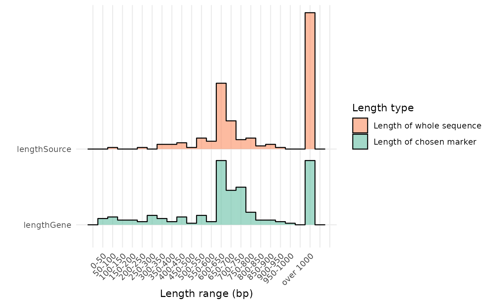

Show the length reduction for the downloaded sequences as a Bar plot
Source:R/plot_family.R
plot_length.RdThis function will plot the distribution of the length (field `lengthGene`) of the sequences found in the data frame object provided to the `refdb` argument, with the corresponding length of the original sequence (field `lengthSource`, the entire fasta associated to the reference sequence on the online database) on another "ridge", using the `ggridges` package.
Arguments
- refdb
`data.frame` A data frame object, as those recovered by the `download_ncbi`, `download_bold` and `loadBarcodeOre` functions.
- limit
`integer` The length in bp (base pairs) with which the sequences longer than it will be grouped and reported as the last bar on the x axis.
- breaks
`integer` The length range in bp of the x axis.
- level
`character` A character vector indicating which taxonomic level the `facet_wrap` function from ggplot2 should refer to. It should be one of "phylum", "class", "order", "family" and "genus". Defaults to `NULL`, thus avoiding the `facet_wrap`.
- select
`character` This parameter allows to pre-filter the data frame object (provided to the argument `refdb`) based on a taxonomic name, which must be present in the records table of the object.
- scaling
`logical` It modifies the height of the bars according to the sequence count in the refdb object, thus, if used with the `level` parameter, the heigth of bars in different wraps can be compared. Defaults to `TRUE`.
Value
`ggplot` A Bar plot, which can be assigned and further modified using the package `ggplot2` and `ggridges`.
Examples
tax <- get_ncbi_taxonomy("Dissostichus mawsoni")
rec <- download_ncbi(tax, ask = FALSE)
plot_length(rec)
